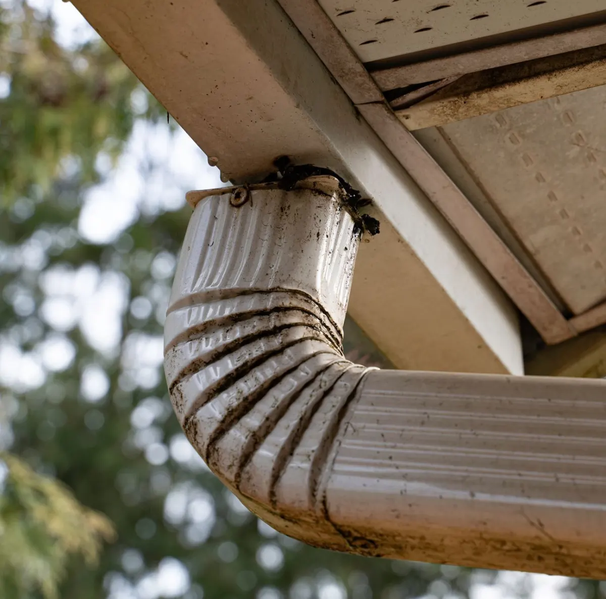
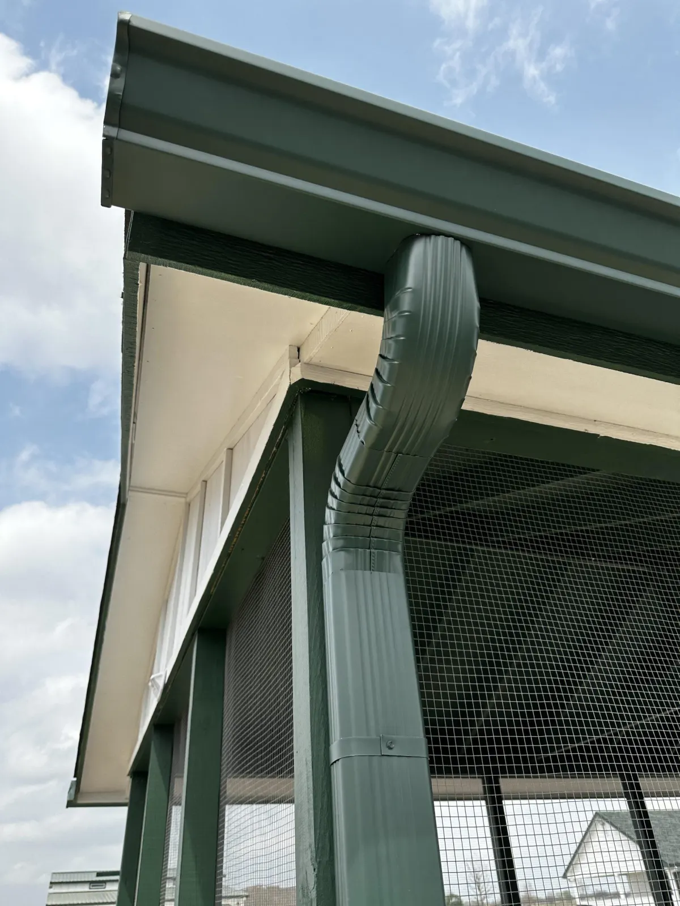

Highly Skilled Cleaning Experts
Technicians experienced with steep roofs, heavy debris, and safe ladder work handle every cleaning visit.
Find focused cleaning help for blocked gutters, downspout clogs, leaf-heavy rooflines, and seasonal maintenance.
Professional gutter cleaning removes roof grit, leaves, shingle granules, and packed debris that can push water behind the fascia or over the front edge during rain.

Technicians experienced with steep roofs, heavy debris, and safe ladder work handle every cleaning visit.
Requests are matched quickly so blocked runs and overflow points get attention before the next storm.
Every quote covers debris removal, downspout checks, and cleanup with nothing added after the fact.
Every match is vetted for licensing, insurance, and safe working practices on ladders and rooflines.
Bagged debris removal and a rinse-through check leave the property as tidy as it was found.
Cleaning specialists use careful access methods for rooflines, second stories, and tight exterior spaces.
Leaves, roof grit, and packed gutter debris are collected and bagged instead of left around the property.
Each cleaning can include flow checks so hidden clogs do not keep pushing water over the gutter edge.
Service timing helps prepare your gutters before heavy rain, leaf season, and repeated overflow problems.
Loose hangers, sagging runs, guard issues, and repair needs are noted before they become bigger problems.
Cleaning recommendations account for nearby trees, roof pitch, drainage pressure, and seasonal debris.

Tell us about the gutter issue, roofline, and preferred timing through the form or email.
A specialist reviews the gutters, downspouts, and debris buildup to confirm the scope before work starts.
You receive an honest, itemized quote covering debris removal and downspout checks before anything is scheduled.
Leaves, roof grit, and packed debris are cleared by hand and downspouts are flow-checked for clogs.
A rinse-through confirms water is moving freely and the property is left as tidy as it was found.


Look for early warning signs like water spilling over the edge, sagging sections, or plants growing in packed leaves. Catching these signs early and scheduling a proper cleaning keeps water moving where it should and protects the fascia, siding, and foundation beneath it.
Watch for water spilling over the edge during rain, sagging sections, staining below the fascia, or plants sprouting from packed leaves. Any of these usually means a cleaning is overdue.
Debris is removed and bagged by hand, downspouts are flow-checked for clogs, and a rinse-through confirms water is moving freely before the visit wraps up.
Yes. Packed debris pushes water behind the fascia and over the front edge, which over time can lead to rot, siding stains, and pooling near the foundation.
Most homes need cleaning once or twice a year. Properties near trees, heavy roof debris, or frequent storms often benefit from more frequent visits.
Tell us about tree coverage, overflow points, and preferred service timing.